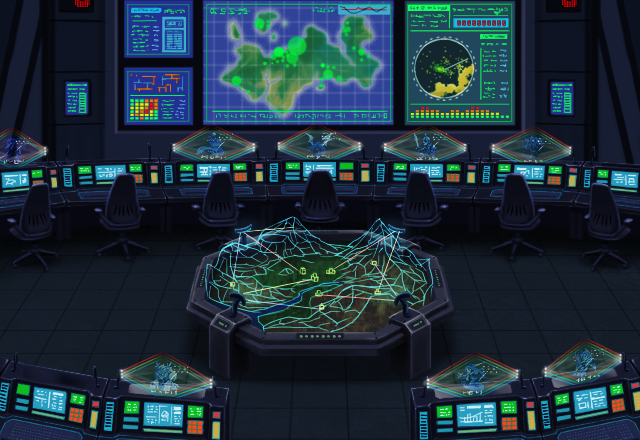
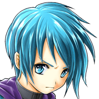
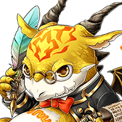
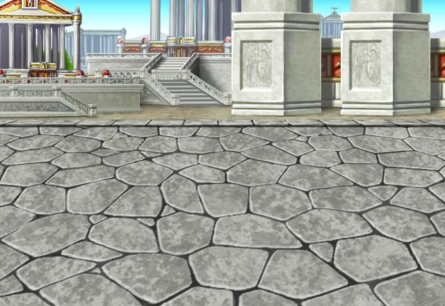
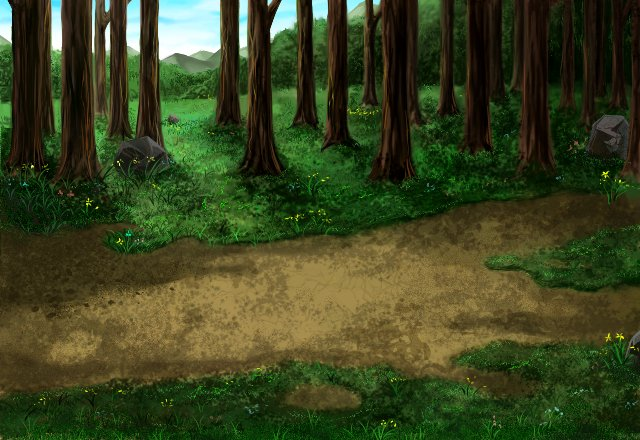

ノエル
やあ、Shou-chan。 いいところに来たね。
ノエル
ちょうど今、グランドクエストシステムに、 新機能が備わるところだよ。
ノエル
これまではキミたち召喚師自身の経験に 基づいたシミュレートしかできなかったけど
ノエル
神々との大戦時の出来事なんかも、 再現することが可能になったんだ。


ノエル
まあ、 これはボクらの技術の成果というより、
ノエル
ある女召喚師の協力を得て、 ようやく可能になったことで、
ノエル
そこがちょっと 気に食わないんだけどね……。

リント
……ようやく設置し終えたよ。
リント
そうか、キミもこの新機能に 興味があるというわけだね。
リント
歴史を体験できるなんて、 なかなかできることじゃない。
ノエル
神々の大戦期での戦いを経験することは、 キミにとって良い訓練になると思うし、
ノエル
また、シミュレートで起こったことを 記録すれば歴史研究にも大いに役立つ。
ノエル
キミにとっても、ボクらにとっても、 まさに良いことだらけの機能さ。
リント
この機能で再現されているのは、 あくまで“シミュレート”だ。
リント
史実とは異なるけど “その可能性があった未来”
グランガイア全土を巻き込んだ神々と人の大戦。グランガイア東部に位置するパルミナ王国もその例外ではなく神軍の侵略にさらされようとしていた。
だが、パルミナ王国第一王女エデアはある神より啓示を受けいち早く神々の攻撃に対処を開始する。
彼女は身分を隠して“緑輝剣鎧ラフドラニア”を装着。ともに国のため戦ってくれる仲間を探す旅に出発する……。

エデア
たとえ相手が神々であろうと 私の大切な人たちを滅ぼさせはしない。
エデア
命をかけて神々と 戦ってくれる仲間が……。
そして、彼女の元に集う３人の仲間たち。
ローランド
とはいえ、このまま帰れと言っても 納得はいかないのだろう？
ローランド
かつて剣聖と呼ばれた我が力、 喜んであなたに捧げよう。
ディン
俺の想像以上に デカいものを背負ってそうだな……。

ロクス
あなたの力になりたくて 弓術を鍛え続けていました。
ロクス
まだまだ未熟な点は多いですが お側に置いて、ボクの力をお使いください。
ロクス
なぜ姫様は、こんな不良神官を お側に置いているのだ……。
ロクス
ボクの矢は、オマエのその無作法な口を いつも狙っているってことをな！
神軍に対抗するため後に「パルミナの四戦士」と呼ばれる者たちがここに集った。
だが、彼らが集った時、すでにパルミナ王国は神軍により陥落寸前まで追い詰められていた。
エデアたち四戦士は神軍の司令官である魔統神カルデス討伐を決意。残った王国兵士たちとともに、最後の戦いに挑もうとしていた……。